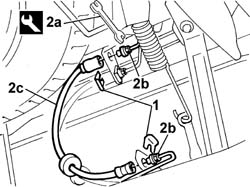

3330E34 Intermediate FLEXIBLE PIPE (one), left or right, to rear brakes - R.R.
- Path
- Procedures > 33 BRAKES > 3330 HYDRAULIC BRAKE SYSTEM > 3330E hydraulic brake system pipes > 3330E34 Intermediate FLEXIBLE PIPE (one), left or right, to rear brakes - R.R.
- Kind
- repair procedure (removal / refitting; the operation number is the code)
- Applies to
- all engines; all production periods
- Interactive page
- https://sloeber94.github.io/elrnDB-fDbl/en/#/2584675
Applies to: all engines; all production periods
 Removing
Removing
 Refitting
RefittingPosition the vehicle on a lift.
Op. 3330C40 BRAKE FLUID RESERVOIR CAP - R + R.
Using a syringe, drain the brake fluid from the reservoir.
1. Remove the two retaining clips.
2. Using the tool (2a), undo the connectors (2b), then remove the flexible pipe (2c).
 | Name | Country |
|---|---|---|
2a | Box wrench for brake fittings | 1.856.132.000 |

Applies to: all engines; all production periods
Refitting
RemovingUsing the special spanner, tighten the connectors for the brake pipe.
| Name | Country |
|---|---|---|
- | Box wrench for brake fittings | 1.856.132.000 |
Secure the pipe to the body shell, fitting the retaining clips.
Op. 0010T64 BRAKE AND/OR CLUTCH FLUID CHECK LEVEL AND TOP UP AS NECESSARY.
Applies to: all engines; all production periods; only with equipment: ABS
Op. 0010T66 EXTRAS FOR VERSIONS WITH ABS FOLLOWING OPERATION 0010T65.
Op. 3330C40 BRAKE FLUID RESERVOIR CAP - R + R.
Remove the car from the lift.
Topics linked from this page (4)
- 0010T64 brake and or clutch fluid check level and top up as necessary
- 0010T65 hydraulic brake system bleed air
- 0010T66 manual gearbox oil check level and top up if necessary
- 3330C40 brake fluid reservoir plug - r + r